Strategy 01 · after Adam Mastroianni
The Decline of Deviance
The strategy: Lift one bumper
From “The Decline of Deviance” by Adam Mastroianni, Experimental History, 28 Oct 2025. Retold by NAOS in 15 short videos and read by Cella.
The essay as one climb
Good news at the bottom, the choice at the summit. Each word opens its sentence.Swipe the map sideways to climb from the start.
- Harmful strange, now rarer (he calls that good)
- The good strange, rarer too, and who lived it
- italicWhat tilts the slope toward the safe option
- The choice
The videos
15 pieces. Each one also sits in its climb below.
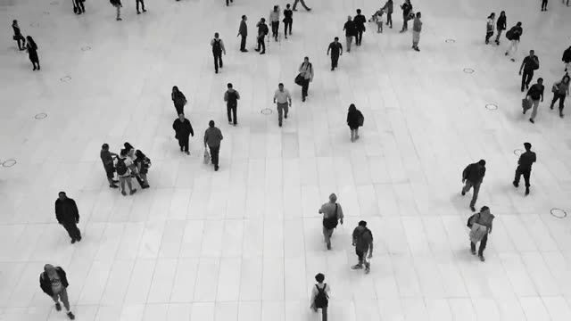
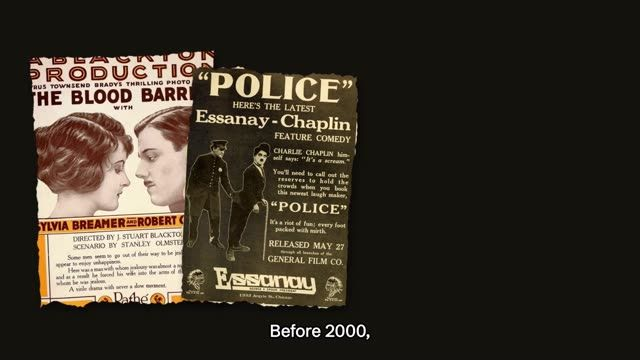
![Spoken essay over archive images and painted colour fields. A 1990s party table crowded with red cups, then the same table with fewer than half; a night street engraving stamped with a half sign; a circle of empty folding chairs. Grids of six cafes in one style, six wordmarks melting into one plain font, six identical paper pages. A knee brace, a jar of cream and a name badge in museum vitrines. Red painted letters: weirdness is a choice. Basement photographs, a hole in a concrete floor, and a hand gripping a ladder going down into it.](../videos/g11_9x16.jpg)
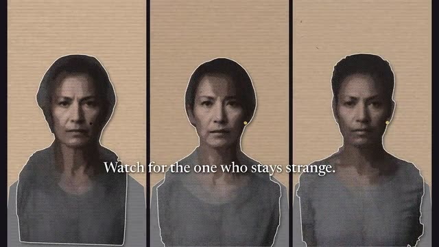
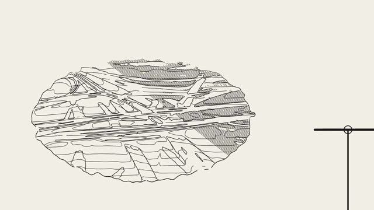
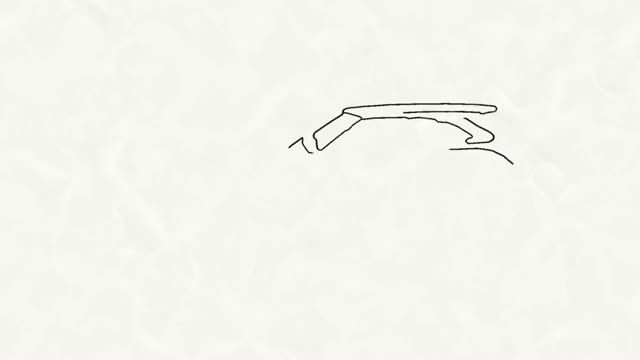
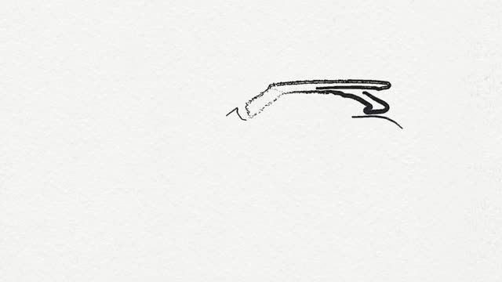
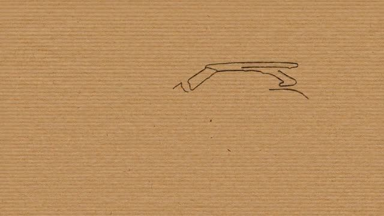
![A calm fake app advert. Odd objects float on black: a knitted octopus, a jar of bottle caps, a kazoo, a ship in a bottle, a purple wig, a dented trumpet. A beige card reads middling. On a phone screen, boxes lock onto each object and sort them into a beige grid that says Done. Nothing stands out. Tiny office workers are nudged onto one path; a knee, a jar of cream and a name badge sit in locked vitrines. Settings screen: Background nudging on, Protect joints, skin, reputation on, Keep one strange thing, Premium. Would you pay for it?](../videos/g13_9x16.jpg)
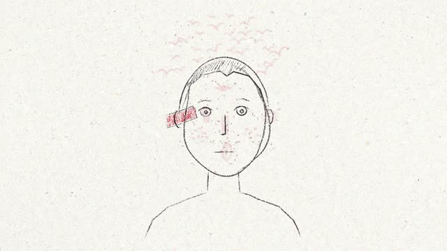
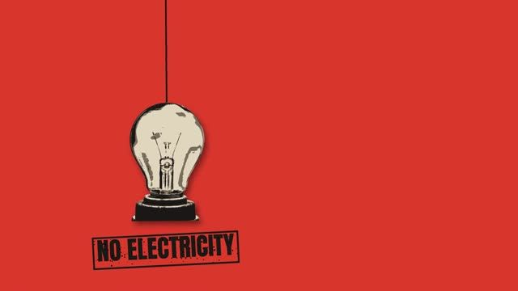
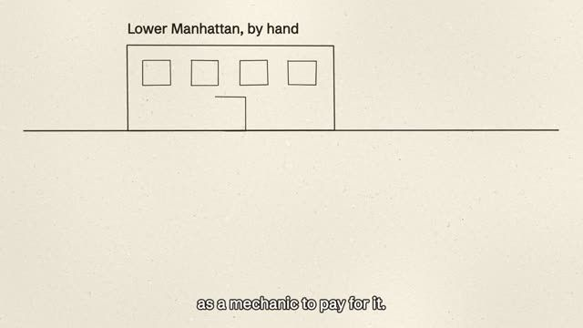
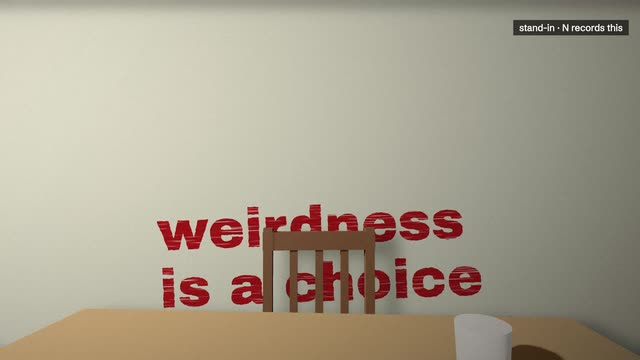
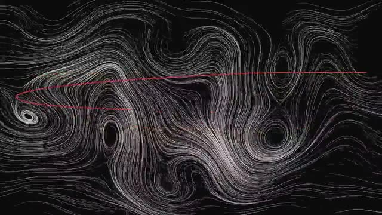
Cella reads the essay
Cella: I’m Cella. I spend my days holding still on a slope, so this essay felt close to home. Here is how I read it.
Draft for N. Cella’s summary and take are written by the NAOS studio from claims checked against the essay; N rewrites or approves them.
Climb 1: The good news
Cella: Adam Mastroianni starts with good news. High school students are less than half as likely to drink as they were in the 1990s, crime has fallen by half in thirty years, and people don’t seem to be joining cults anymore. He calls that good.
half as many teens drink (harmful strange, now rarer)
“high school students are less than half as likely to drink alcohol as they were in the 1990s”
Adam Mastroianni, “The Decline of Deviance”
crime down by half (harmful strange, now rarer)
“crime rates have fallen by half in the past thirty years”
Adam Mastroianni, “The Decline of Deviance”
no more cults (harmful strange, now rarer)
“people don’t seem to be joining cults anymore”
Adam Mastroianni, “The Decline of Deviance”
Climb 2: The other strange fades too
Cella: Then he looks at the harmless and the good kinds of strange, and finds them getting rarer too. Americans have been moving less since the mid-1980s. He says three in four top-grossing movies are now prequels, sequels or spinoffs. Cafes share one style, logos share one kind of font, and nearly every medical paper uses the same format.
the good strange, rarer (good strange)
“neutral and positive forms of deviance also seem to be getting rarer.”
Adam Mastroianni, “The Decline of Deviance”
we stay put (good strange)
“You have to be a bit of a misfit to do such a thing in the first place, and becoming a stranger makes you even stranger.”
Adam Mastroianni, “The Decline of Deviance”
In the videos: G5
25% to 75% sequels (good strange)
“Before 2000, for instance, only about 25% of top-grossing movies were prequels, sequels, spinoffs, etc. Now it’s 75%.”
Adam Mastroianni, “The Decline of Deviance”
In the videos: H1
every profile alike (good strange)
“Every MySpace page was a disastrous hodgepodge; every Facebook profile is identical except for the pictures.”
Adam Mastroianni, “The Decline of Deviance”
In the videos: H1
one cafe, one logo (good strange)
“Brands seem to be converging on the same kind of logo: no images, only words written in a sans serif font that kinda looks like Futura.”
Adam Mastroianni, “The Decline of Deviance”
The cafe observation: Alex Murrell, “The age of average”, 20 Mar 2023, which the essay cites
every paper, one format (good strange)
“Standardizing your writing also standardizes your thinking”
Adam Mastroianni, “The Decline of Deviance”
creativity running low (good strange)
“Creativity is just deviance put to good use.”
Adam Mastroianni, “The Decline of Deviance”
In the videos: H1
Climb 3: Why
Cella: His guess at the cause: we are richer, and life is a lot less dangerous than it used to be. With a long life ahead, small risks start to look big. He cites the writer Linch, who found that the value agencies put on a statistical life has grown faster than GDP.
richer and safer (tilts the slope toward safe)
“First: we’re richer. … Second: life is a lot less dangerous than it used to be.”
Adam Mastroianni (he says he suspects these two reasons), “The Decline of Deviance”
a life costs more (tilts the slope toward safe)
“the value of a statistical life has increased faster than GDP”
Adam Mastroianni, “The Decline of Deviance”
Value-of-life analysis: Linch, “The Rising Premium for Life”, The Linchpin, 10 Jul 2025
In the videos: G7
would you buckle up? (tilts the slope toward safe)
“would you really bother to wear your seatbelt?”
Adam Mastroianni, “The Decline of Deviance”
In the videos: G7
Climb 4: How
Cella: He borrows a name from ecologists for what we do about it: a slow life history strategy. He thinks most of us never pick it on purpose. It works in the background, nudging each decision toward the safer option, until your life runs between bumpers like a ball on a bowling lane.
slow life strategy (tilts the slope toward safe)
“it makes sense to adopt what ecologists refer to as a “slow life history strategy””
Adam Mastroianni, “The Decline of Deviance”
joints, skin, reputation (tilts the slope toward safe)
“Everything’s gotta last: your joints, your skin, and most importantly, your reputation.”
Adam Mastroianni, “The Decline of Deviance”
bumpers on the lane (tilts the slope toward safe)
“It operates in the background, nudging each decision toward the safer option. Those choices compound over time, constraining the trajectory of your life like bumpers on a bowling lane.”
Adam Mastroianni, “The Decline of Deviance”
we forget we can (tilts the slope toward safe)
“You start out following the rules, then you never stop, then you forget that it’s possible to break the rules in the first place.”
Adam Mastroianni, “The Decline of Deviance”
divergent living (good strange)
“divergent thinking comes from divergent living, and vice versa.”
Adam Mastroianni, “The Decline of Deviance”
In the videos: G4a
Climb 5: Then and now
Cella: He measures the change against his grandparents, who smoked, hitched rides in the back of pickup trucks and put off the doctor until it was absolutely necessary. Those things feel unthinkable to him now. A hundred years ago, he reminds us, you could die from a splinter.
the grandparents (good strange)
a splinter could kill (tilts the slope toward safe)
“100 years ago, you could die from a splinter.”
Adam Mastroianni, “The Decline of Deviance”
In the videos: G1
Climb 6: One who did it anyway
Cella: Then he tells the story of the sculptor Arturo di Modica, who left his Charging Bull in the financial district without permission or payment. The city impounded it and put it back after the public protested. Mastroianni asks who would live that life now, when every step of it was inadvisable.
the Charging Bull (good strange)
“His most famous work, the Charging Bull statue that now lives on Wall Street, was deposited there without permission or payment; it was originally impounded before public outcry caused the city to put it back.”
Adam Mastroianni, “The Decline of Deviance”
Di Modica: “My point was that you must be strong.” Sebastian McCarthy, City AM, 1 Oct 2018
In the videos: H2
every step inadvisable (good strange)
“Who would live di Modica’s life now? Every step was inadvisable”
Adam Mastroianni, “The Decline of Deviance”
In the videos: H2
Climb 7: The choice
Cella: He ends here: for the first time in history, weirdness is a choice, and a hard one, because we have more to lose than ever. He says a more interesting future needs somebody brave enough to climb down into the holes in the basement.
weirdness is a choice (the choice)
“For the first time in history, weirdness is a choice. And it’s a hard one, because we have more to lose than ever.”
Adam Mastroianni, “The Decline of Deviance”
climb down (the choice)
“we’ll have to tolerate a few illegal holes in the basement, and somebody will have to be brave enough to climb down into them.”
Adam Mastroianni, “The Decline of Deviance”
Cella’s take
Lift one bumper.
My take: the essay is about what we protect. Something below me always wants me to slide. In our lives the easy slide runs toward the safe option, every time, and nobody chooses it.
So the strategy is one small friction you pick on purpose. Lift one bumper this week, something you would normally rule out because it might look odd, and watch where the ball goes.
This part is NAOS’s, not Mastroianni’s.
Draft for N. Cella’s summary and take are written by the NAOS studio from claims checked against the essay; N rewrites or approves them.
Read the original
“The Decline of Deviance”
Adam Mastroianni · Experimental History (Substack) · 28 Oct 2025 · www.experimental-history.com/p/the-decline-of-deviance
The retellings, and the lines said to you, are ours (NAOS). Adam Mastroianni did not make or endorse them.
Sources
NAOS retells ideas other people wrote down first. Every piece names its source here, with links, so you can read the original. All the pieces come from one essay: Adam Mastroianni, “The Decline of Deviance”, Experimental History, 28 Oct 2025. www.experimental-history.com/p/the-decline-of-deviance
Why the risks our grandparents took feel unthinkable now (G1)
- Essay: Adam Mastroianni, “The Decline of Deviance”, Experimental History, 28 Oct 2025. www.experimental-history.com/p/the-decline-of-deviance
- Archive photographs behind the cut-out figures:
- “Unknown man, Sogndal”, 1930s, Elen Loftesnes, Fylkesarkivet i Vestland, via Unsplash. unsplash.com/photos/man-in-hat-and-trench-coat-stands-against-wall-DOiCkmWsszg
- “Soldiers from Fort Benning on a street in Columbus, Georgia”, 1941, The New York Public Library (Wallach Division), via Unsplash. unsplash.com/photos/soldier-stands-on-street-corner-overlooking-town-lw3ax5TvY5s (NYPL record: digitalcollections.nypl.org/items/444d5640-622d-013d-f3b5-0242ac110002)
- Stock photos (Pixabay): Josch13 pixabay.com/photos/light-bulb-incandescent-bulb-376926/ ; suju-foto pixabay.com/photos/water-tap-soap-hand-washing-hygiene-4459689/ ; Storme22k pixabay.com/photos/concrete-cigarette-smoking-rubbish-8161909/ ; RonaldPlett pixabay.com/photos/truck-pickup-chevrolet-cheve-s10-8497705/ ; geralt pixabay.com/photos/doctor-door-sign-name-tag-469590/ ; Surprising_Media pixabay.com/photos/food-delivery-courier-motorcycle-7210175/ and pixabay.com/photos/couple-smartphone-walking-young-8853963/ ; JESHOOTS-com pixabay.com/photos/iphone-smartphone-apps-apple-inc-410324/ ; roberttchen pixabay.com/photos/gourmet-japanese-cuisine-convenient-1542365/ ; kaboompics pixabay.com/photos/wood-shreds-tree-natural-wooden-791858/ ; Lukas_Rychvalsky pixabay.com/photos/man-model-portrait-pose-walking-2920911/
Why is everyone the same now? (G2)
- Essay: Adam Mastroianni, “The Decline of Deviance”, Experimental History, 28 Oct 2025. www.experimental-history.com/p/the-decline-of-deviance
- Archive photographs (public domain):
- “A police Volkswagen comes through the automatic washer at police headquarters”, DOCUMERICA (US EPA), National Archives 551920. commons.wikimedia.org/wiki/File:A_POLICE_VOLKSWAGEN_COMES_THROUGH_THE_AUTOMATIC_WASHER_AT_POLICE_HEADQUARTERS_-_NARA_-_551920.jpg
- “Laboratory Techniques - All States”, US Department of Agriculture, Forest Service, via the National Archives. commons.wikimedia.org/wiki/File:Laboratory_Techniques_-_All_States_-_DPLA_-_6291e77a06efb78d190c011aeb0bfc28.jpg
- Stock photos: Dominic Kurniawan Suryaputra (Unsplash) unsplash.com/photos/people-are-standing-in-a-line-waiting--yjUzBUqVTU ; Engin_Akyurt (Pixabay) pixabay.com/photos/train-wagon-people-crowd-feet-2373323/ ; Lisanto 李奕良 (Unsplash) unsplash.com/photos/people-sitting-on-chair-in-restaurant-pT4gB7T6tog ; Mustafa Sheikhmouss (Unsplash) unsplash.com/photos/cafe-tables-with-woven-chairs-TzBFk5nzAKY ; Janelle Ang (Unsplash) unsplash.com/photos/a-bright-cafe-interior-with-plants-and-tables-knVcZCTAq0Q ; tianya1223 (Pixabay) pixabay.com/photos/ikea-table-dining-chair-lamp-4048225/ ; Kost9n4 (Pixabay) pixabay.com/photos/analysis-biochemistry-biologist-2030265/ ; National Institute of Allergy and Infectious Diseases (Unsplash) unsplash.com/photos/a-room-filled-with-lots-of-medical-supplies-0MLeFkfWolk
- Four of the pictures (an empty skate park, an empty food court, a phone on a bed, a diver on a bus) were made with an image model.


The slow life history strategy, in three looks (G4a, G4b, G4c)
- Essay: Adam Mastroianni, “The Decline of Deviance”, Experimental History, 28 Oct 2025. www.experimental-history.com/p/the-decline-of-deviance
- Drawn by us in three looks: black and red ink on white paper; ink brush on watercolour paper; pencil and white chalk on kraft paper. Paper texture: ambientCG (CC0). ambientcg.com
Becoming a stranger makes you even stranger (G5)
- Essay: Adam Mastroianni, “The Decline of Deviance”, Experimental History, 28 Oct 2025. www.experimental-history.com/p/the-decline-of-deviance
- Footage (Pixabay): ghasoub pixabay.com/videos/id-152798/ ; aboutneyna pixabay.com/videos/id-45254/ ; Coverr-Free-Footage pixabay.com/videos/id-3608/ , pixabay.com/videos/id-2272/ , pixabay.com/videos/id-6387/ , pixabay.com/videos/id-1003/ ; Iconikmg pixabay.com/videos/id-11722/ ; RafterJr72 pixabay.com/videos/id-24602/ , pixabay.com/videos/id-24603/ ; Life-Of-Vids pixabay.com/videos/id-1623/ ; Vimeo-Free-Videos pixabay.com/videos/id-910/ ; agmclellan pixabay.com/videos/id-15519/ ; carl_watermark pixabay.com/videos/id-7128/ ; Matthias_Groeneveld pixabay.com/videos/id-126837/
- Footage (Coverr): coverr.co/videos/coverr-a-woman-strolls-at-the-street-market ; coverr.co/videos/coverr-business-professional-with-laptop ; coverr.co/videos/coverr-woman-walking-with-luggage-on-street ; coverr.co/videos/coverr-a-young-man-opens-a-door-and-walks-out-of-the-subway-130 ; coverr.co/videos/coverr-ready-for-takeoff-traveler-with-suitcase ; coverr.co/videos/coverr-twilight-city-call ; coverr.co/videos/coverr-tram-in-the-city-center-5639
- Photos: Priscilla Du Preez (Unsplash) unsplash.com/photos/three-women-walking-on-brown-wooden-dock-near-high-rise-building-during-daytime-mKJUoZPy70I ; Omar Lopez (Unsplash) unsplash.com/photos/woman-hugging-other-woman-while-smiling-at-beach-0-uzdU3gUYw ; Daniel Begel (Unsplash) unsplash.com/photos/a-vintage-lamppost-stands-by-an-ornate-building-entrance-L4AoWHyi3Rw ; Aaron Burden (Unsplash) unsplash.com/photos/fountain-pen-on-black-lined-paper-y02jEX_B0O0 ; StarFlames (Pixabay) pixabay.com/photos/people-joy-smile-holiday-friends-2295052/
Value of a statistical life (G7)
- Essay: Adam Mastroianni, “The Decline of Deviance”, Experimental History, 28 Oct 2025. www.experimental-history.com/p/the-decline-of-deviance
- Value-of-life analysis: Linch, “The Rising Premium for Life”, The Linchpin, 10 Jul 2025. linch.substack.com/p/the-rising-premium-for-life
- Seatbelt buckle: “003 Aircraft seatbelt buckle cover in Airbus A321”, Marek Ślusarczyk (Tupungato), CC BY 3.0 (creativecommons.org/licenses/by/3.0/), via Wikimedia Commons, engraved and modified by us. commons.wikimedia.org/wiki/File:003_Aircraft_seatbelt_buckle_cover_in_Airbus_A321.jpg
- Banana peel: Louis Hansel (Unsplash), engraved by us. unsplash.com/photos/a-peeled-banana-sitting-on-top-of-a-green-surface-RAkQAMrjOvk
- The wallet was drawn from a picture made with an image model, then engraved.

Why is every movie a sequel now? (H1)
- Essay: Adam Mastroianni, “The Decline of Deviance”, Experimental History, 28 Oct 2025. www.experimental-history.com/p/the-decline-of-deviance
- Movie figures: Adam Mastroianni, “Pop culture has become an oligopoly”, Experimental History, 2 May 2022. www.experimental-history.com/p/pop-culture-has-become-an-oligopoly (the three-quarters figure is the one he gives in “The Decline of Deviance”)
- Engravings, The Met (CC0): Domenico del Barbiere www.metmuseum.org/art/collection/search/358117 ; Enea Vico www.metmuseum.org/art/collection/search/358113 ; John Lizars, “A System of Anatomical Plates of the Human Body” www.metmuseum.org/art/collection/search/687392
- Portraits of house surgeons, Wellcome Collection (public domain): wellcomecollection.org/works/daunezh2 ; wellcomecollection.org/works/v63sb5nt ; wellcomecollection.org/works/rdqf4xt8
- Film posters, Internet Archive: “Police” (1916, Essanay) archive.org/details/Police1916 ; “The Blood Barrier” (1920, J. Stuart Blackton), uploaded by Darrin Baines archive.org/details/BLACKTON-2026-004
- Stock (Pixabay): geralt pixabay.com/vectors/movie-theater-theatre-presentation-7558935/ ; Pexels pixabay.com/photos/code-coding-computer-data-1839406/ ; SinnesReich pixabay.com/illustrations/texture-background-gold-template-1647380/ ; wal_172619 pixabay.com/photos/water-waves-surface-texture-8200502/ ; whitedaemon pixabay.com/photos/woman-towel-surprised-excited-2094172/
- Footage (Coverr): “Business professional with laptop”. coverr.co/videos/coverr-business-professional-with-laptop
The Charging Bull story (H2)
- Essay: Adam Mastroianni, “The Decline of Deviance”, Experimental History, 28 Oct 2025. www.experimental-history.com/p/the-decline-of-deviance
- Arturo di Modica’s words: Sebastian McCarthy, “Bull market: New version of Wall Street’s iconic Charging Bull goes under the hammer later this week”, City AM, 1 Oct 2018. www.cityam.com/bull-market-new-version-wall-streets-iconic-charing-bull/
- Present-day photographs, Carol M. Highsmith, Library of Congress (public domain): “Wall Street bull, New York, New York” www.loc.gov/item/2011630801/ ; “U.S. financial hub, Wall Street, New York, New York” www.loc.gov/item/2011630646/ . The Charging Bull itself is Arturo di Modica’s sculpture.
- Archive photographs, Library of Congress (no known restrictions): “[New York, N.Y., Wall Street]”, Detroit Publishing Co., about 1910 www.loc.gov/item/2016796927/ ; “Wall Street, New York”, Detroit Photographic Co., 1901 www.loc.gov/item/2016798899/ ; “[New York Stock Exchange, looking down Broad Street from Wall Street]”, 1952 www.loc.gov/item/2020635791/
- Engravings, The Met (CC0): Louis François Cassas, “View of Messina Harbor”, 1783 www.metmuseum.org/art/collection/search/622952 ; Adriaen van de Velde, “Standing Bull” www.metmuseum.org/art/collection/search/398961
Wordless: the field, the erased face, sixty faces (W-G6, W-G4, W-G2)
- Essay: Adam Mastroianni, “The Decline of Deviance”, Experimental History, 28 Oct 2025. www.experimental-history.com/p/the-decline-of-deviance
- Pictures made by us. The faces in “sixty faces” were made with an image model and painted over; none is a real person.
Why does everything look the same now? (G11)
- Essay: Adam Mastroianni, “The Decline of Deviance”, Experimental History, 28 Oct 2025. www.experimental-history.com/p/the-decline-of-deviance
- The cafe observation: Alex Murrell, “The age of average”, 20 Mar 2023, which the essay cites. www.alexmurrell.co.uk/articles/the-age-of-average
- Basement photographs, Historic American Buildings Survey, Library of Congress (no known restrictions): Robert G. Graham, Fort Defiance Indian Hospital, 2010 www.loc.gov/pictures/item/az0613.photos.397642p/ ; Latham House www.loc.gov/pictures/item/va1917.photos.381552p/ ; Gary W. Baughn, North Star Woolen Mill, 1998 www.loc.gov/pictures/item/mn0559.photos.343155p/
- Prints, Art Institute of Chicago (public domain): Édouard Manet, “At the Café”, 1874 www.artic.edu/artworks/109689 ; Donald Shaw MacLaughlan, “Rue Mouffetard, Paris”, 1900 www.artic.edu/artworks/11766
- Engraving, The Met (CC0): John Lizars, “A System of Anatomical Plates of the Human Body”, plate IX www.metmuseum.org/art/collection/search/687392
- Paper texture: ambientCG (CC0). ambientcg.com
middling., a fake app commercial (G13)
- Essay: Adam Mastroianni, “The Decline of Deviance”, Experimental History, 28 Oct 2025. www.experimental-history.com/p/the-decline-of-deviance . The two settings that come switched on quote it: “It operates in the background, nudging each decision toward the safer option.” and “your joints, your skin, and most importantly, your reputation.”
- middling. is not a real app. This is a parody; no real brand appears in it. Pictures made by us.
Weirdness is a choice (G12)
- Essay: Adam Mastroianni, “The Decline of Deviance”, Experimental History, 28 Oct 2025. www.experimental-history.com/p/the-decline-of-deviance